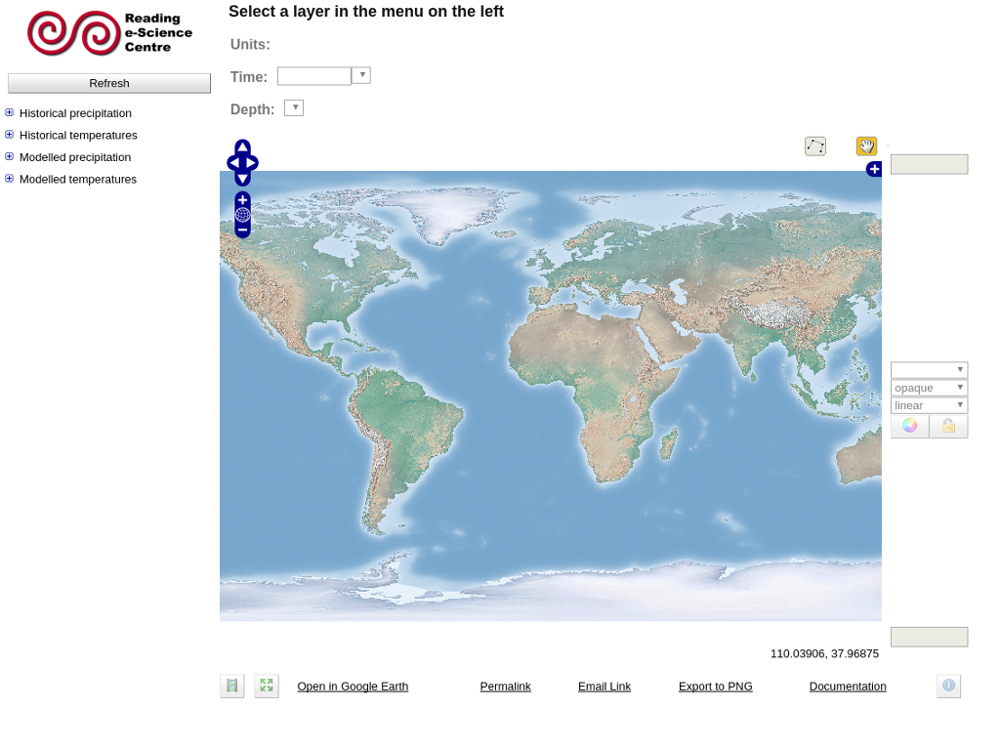
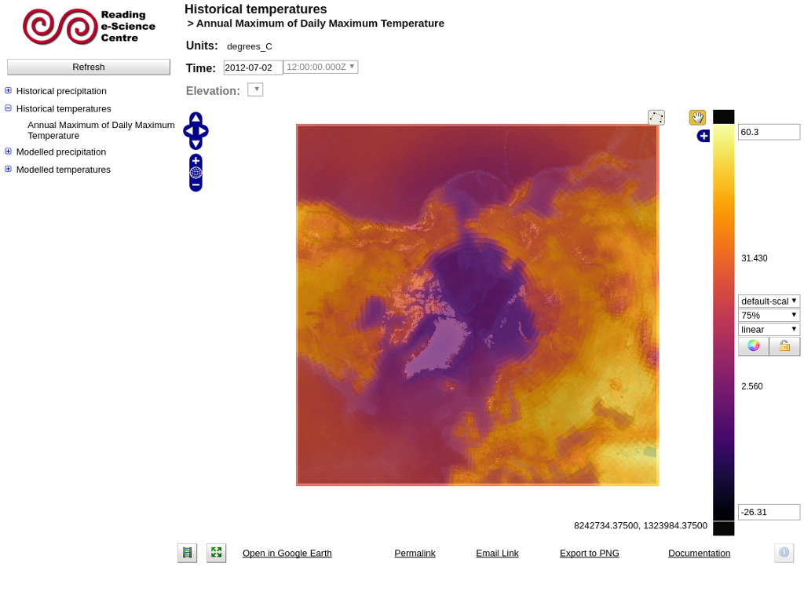

Note
This project is only included on the OSGeoLive virtual machine disk (VMDK)
ncWMS Quickstart¶
ncWMS is a Web Map Service which allows the fast visualisation of data from NetCDF files and other sources of environmental data. This quickstart guide describes how to explore the sample data provided using the Godiva2 web client. For configuration and adding other data sources to the server, please consult the documentation on the ncWMS website.
Start ncWMS and understand the workspace¶
Select .
After a few moments the application will start up and open a web browser at http://localhost:8080/ncWMS2/Godiva3.html
{kind=link}
Use the left-hand menu to choose a dataset to view.
Clicking a dataset (or the + icon to the left of it) will expand the dataset to show the available variables to plot.
Choose a variable by clicking on it. The data displays on the interactive map after a short delay (a progress bar may display showing the progress of loading image tiles from the WMS servers).
Selecting the vertical level¶
If the variable you are viewing has a vertical dimension you will be able to select the vertical level using the drop-down box above the map.
Selecting the timestep¶
If the displayed variable has a time dimension a date control will appear above the map. Click on this control to select the date you want to focus on. If there are several timesteps available for this day, use the drop-down box above the map to select the time.
Finding the data value at a point¶
Once a variable has been displayed on the map, you can click on the map to discover the data value at that point. The data value, along with the latitude and longitude of the point you clicked, will appear in a small pop-up window at the point where you clicked.

Change the style of the data display¶
Adjusting the colour contrast range¶
When you first load a variable it will appear with a default colour scale range. This range may not be appropriate for the geographical region and timestep you are interested in. By clicking “auto” (the colour wheel to the right of the colour scale bar) the colour scale range will be automatically stretched to suit the data currently displayed in the map. You can also manually change the colour scale range by editing the values at the top and bottom of the colour scale bar.
Locking the scale range¶
Sometimes, when comparing two datasets, you might want to fix the colour scale range so that when you select a new variable, that variable is shaded with exactly the same colour scale. To do this, click the “lock” link, which is the padlock icon to the right of the colour scale bar. The colour scale range will then not be changed when a new variable is loaded and the scale range cannot be edited manually. However, the colour palette and the number of colour bands can still be modified while the scale range is locked. Click the lock icon again to make the colour scale editable.
Changing the colour palette¶
The colour palette can be changed by clicking on the colour scale bar. A pop-up window will display with the available palettes. Click on one to load the new palette. The window also contains a drop-down box to select the number of colour bands to use, from 10 (giving a contoured appearance) to 250 (smoothed). Note that if the number of colour bands is changed, you will need to click on the desired palette to effect the change. All colour palettes can be reversed by clicking the “Flip” button on the colour palette selector.
Other parameters¶
Certain variables, particularly biological parameters, are best displayed with a logarithmic colour scale. The spacing of the colour scale can be toggled between linear and logarithmic using the drop-down box to the right of the colour scale bar. Note that you cannot select a logarithmic scale if the colour scale range contains negative or zero values.
Creating animations¶
Click the animation wizard button below the lower left corner of the map.
Select a start and end time for the animation
Choose the granularity and frame rate for the animation
Click “Go”. Note that the animation may take quite a while to display.
Click the “Stop animation” button (where the wizard was) to stop the animation and return the controls to normal.
Timeseries plots¶
Creating a timeseries plot uses a similar wizard to that used to create animations. When finding the data value at a point, a link will be present to create a timeseries plot if the data have a time axis. Timeseries plots open in a new window.
Vertical sections and transects along arbitrary paths¶
At the top of the map, click the icon that looks like a line joining four points.
Click on the map to start drawing a line.
Add “waypoints” along this line by single-clicking at each point.
Double-click to finish the line. A new browser window opens showing the variation of the viewed variable along the line (i.e. a transect plot). If the variable has a vertical dimension, a vertical section plot will display under the transect plot.
Changing the background map¶
A selection of background maps is available on which data can be projected. Select a different background map by clicking the small plus sign in the top right-hand corner of the interactive map.
Changing the map projection¶
The map projection is changed by selecting a new background map as above. If the background map is in a different projection then the data overlay will be automatically reprojected into the new coordinate system. Godiva3 provides the option to select a background map in north or south polar stereographic projection. There may be a delay before the map displays in the new projection.
{kind=link}
Saving and emailing the view¶
You may want to save the current view to return to it later or share it with a colleague. The “Permalink” under the bottom right-hand corner of the map links to a complete URL that recreates the current view.
Left-click on the permalink to bring up a new window with an identical view.
Right-click on the permalink and select “Copy link location” or the equivalent for your web browser. You can then paste the link into a report, your notes or an email.
You can click on “Email Link” to start a new email message in your default email client with the permalink already included in the message body.
What next?¶
Website: https://github.com/Reading-eScience-Centre/ncwms
Support: https://github.com/Reading-eScience-Centre/ncwms/issues